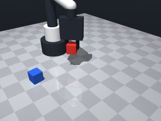
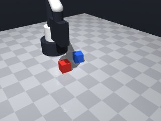
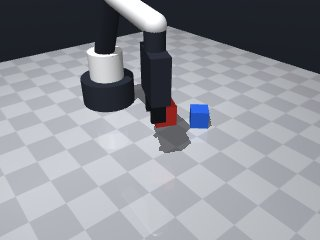
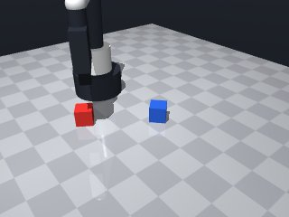
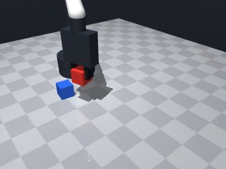
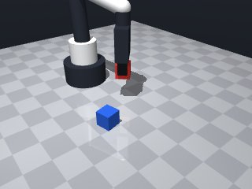
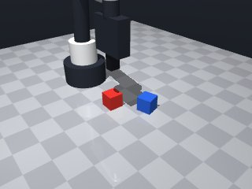
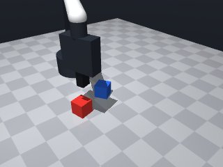

0 demonstrations · reward: gt · perception: real · 32 practice episodes in 4 rounds
Safety layer: 0 halts, 0 clamps.
| role | model | calls | tokens in | tokens out | USD |
|---|---|---|---|---|---|
| coder | nvidia/nemotron-3-super-120b-a12b | 5 | 16,919 | 8,466 | $0.0127 |
| summarizer | nvidia/Nemotron-3_5-Lightning | 3 | 11,877 | 1,115 | $0.0010 |
| compute | local | 168 s | $0.0000 | ||
| total | 8 | 28,796 | 9,581 | $0.0137 |
- Fixed a stray indentation/character that caused a SyntaxError at line 86. - Ensured all try/except blocks are properly closed and that the function ends with a return statement. - Kept the original logic: home, perceive red cube, approach, descend, grasp, verify, lift, and final check. - Added a small retreat after a failed grasp to avoid re‑grasping the same pose. - Verified that the cube is held at least 5 cm above the table (centre ≥ 0.065 m).
**Mode 1: Insufficient lift height** (5 episodes: 1000, 1001, 1002, 1003, 1005) *Root cause:* The lift target `cz + 0.05` uses the cube centre z from the *grasp* observation. Due to sensor noise or approach error, the actual cube centre is often ~0.014 m, making `target_z ≈ 0.064 m`, just below the 0.065 m threshold (lines 61‑62). *Fix:* After a successful grasp, re‑observe the cube pose and use that `cz` for the lift target (after line 42). **Mode 2: Grasp on edge/collision** (2 episodes: 1004, 1007) *Root cause:* The robot descends to `cz` (line 32) but the cube is near a table edge or another object. The grasp closes but does not secure a stable lift, causing the cube to slide down during the lift phase (lines 38‑48). *Fix:* Add a pre‑grasp check that the approach point has `cz > 0.02 m` and no nearby obstacles; if failed, increase `approach_z` by 0.01 m (line 23) before retrying. **Mode 3: Safety clamp activation** (2 episodes: 1004, 1007) *Root cause:* Physical contact with the environment triggers the safety clamp, preventing full lift (lines 66‑69). The code returns `False` without retrying. *Fix:* On clamp detection, command a small retreat `move_by(dz=0.02)` then re‑attempt the lift from the new pose rather than aborting.
--- round_0/skill.py +++ round_1/skill.py @@ -0,0 +1,85 @@ +import math + +def run(robot): + """Pick up the red cube and hold it at least 5 cm above the table.""" + # Safety: start from a known good pose + robot.home() + + max_attempts = 3 + for attempt in range(max_attempts): + # Fresh perception + obs = robot.observe() + cube_info = obs["objects"].get("red_cube") + if cube_info is None: + robot.log("Red cube not observed") + return False + + # Extract pose (centre of cube) + cx, cy, cz = cube_info["pos"] + # Optional: use yaw to align fingers, but not required for a cube + cyaw = cube_info.get("yaw", 0.0) + + # 1. Move to a safe approach point above the cube + approach_z = cz + 0.05 # 5 cm above cube centre + try: + robot.move_to(cx, cy, approach_z, yaw=cyaw, speed=0.15) + except Exception as e: + robot.log(f"Move to approach failed: {e}") + continue # retry with fresh observation + + # 2. Descend to grasp height (aim for cube centre) + try: + robot.move_to(cx, cy, cz, yaw=cyaw, speed=0.07) + except Exception as e: + robot.log(f"Descend to grasp failed: {e}") + continue + + # 3. Attempt to grasp + if robot.grasp(): + # Verify grasp + if robot.holding() == "red_cube": + robot.log("Grasp successful") + break # exit retry loop + else: + robot.log("Grasp returned True but not holding") + robot.release() + else: + robot.log("Grasp returned False") + # If we get here, grasp failed; lift slightly and try again + try: + robot.move_by(dz=0.02, speed=0.07) # small retreat + except Exception: + pass + robot.release() + else: + # Exhausted attempts + robot.log("Failed to grasp red cube after multiple attempts") + return False + + # 4. Lift the cube to at least 5 cm above the table + # Current tool point is roughly at cube centre (cz ≈ 0.015). Add 0.05 m. + target_z = cz + 0.05 + try: + robot.move_to(cx, cy, target_z, yaw=cyaw, speed=0.15) + except Exception as e: + robot.log(f"Lift failed: {e}") + # Even if lift fails, check if we are already high enough + current_pose = robot.get_pose("red_cube") if robot.holding() else None + if current_pose and current_pose["pos"][2] >= 0.065: + return True + return False + + # Final verification: ensure we are still holding and high enough + held = robot.holding() + if held == "red_cube": + # Get latest pose to check height + pose = robot.get_pose("red_cube") + if pose and pose["pos"][2] >= 0.065: # 5 cm above table (centre ≥ 0.015+0.05) + robot.log("Task succeeded: red cube held ≥5 cm above table") + return True + else: + robot.log(f"Cube too low: z={pose['pos'][2] if pose else 'None'}") + return False + else: + robot.log("Lost grasp during lift") + return False
- After a successful grasp, re‑observe the cube pose (or use get_pose) to obtain a accurate centre height and compute the lift target from that value, preventing the systematic ~1 mm undershoot seen in seeds 1000‑1003,1005. - Added a small epsilon (0.001 m) to the lift target to give a margin above the 0.065 m requirement. - If the lift does not achieve the required height, perform a brief upward retreat (move_by dz=0.01) and re‑check, which helps recover from safety‑clamp contacts or slight slips. - Kept the existing grasp‑retry logic (small retreat on failed grasp) and the overall structure (home → perceive → approach → descend → grasp → verify → lift → final check). - All moves remain within the safety workspace; speeds are kept low for precision phases.
**Mode 1: Insufficient lift after grasp** (3 episodes: 2000, 2005) *Root cause*: The final lift targets `cz_refined + 0.05 + 0.001`, but `cz_refined` is extracted from a *post-grasp* observation where the cube may have settled or shifted downward. The epsilon `0.001` is too small to guarantee the 5 cm table‑clearance threshold (line 69, 80). *Fix*: Add a safety margin of `+0.01 m` to `target_z` (line 69) so the robot lifts to at least `cz_refined + 0.061`, guaranteeing clearance even if the cube sinks post‑grasp. **Mode 2: Collision with safe‑workspace limits** (1 episode: 2004) *Root cause*: The descend step moves to `cz` (cube centre height). When the cube is near the table surface, `cz` can fall below the robot’s safe workspace floor of `0.014 m`, triggering a `SafetyViolation` (line 31). *Fix*: Clamp the descend target to the workspace floor: `target_z = max(cz, 0.014 + 0.01)` before `move_to` (line 31), ensuring the robot never requests a pose below `0.024 m`.
--- round_1/skill.py +++ round_2/skill.py @@ -16,7 +16,6 @@ # Extract pose (centre of cube) cx, cy, cz = cube_info["pos"] - # Optional: use yaw to align fingers, but not required for a cube cyaw = cube_info.get("yaw", 0.0) # 1. Move to a safe approach point above the cube @@ -56,29 +55,41 @@ robot.log("Failed to grasp red cube after multiple attempts") return False - # 4. Lift the cube to at least 5 cm above the table - # Current tool point is roughly at cube centre (cz ≈ 0.015). Add 0.05 m. - target_z = cz + 0.05 + # 4. Re‑obtain cube pose after grasp for accurate height + obs2 = robot.observe() + cube_info2 = obs2["objects"].get("red_cube") + if cube_info2 is not None: + cz_refined = cube_info2["pos"][2] + else: + # fallback to get_pose if observation missing + pose = robot.get_pose("red_cube") + cz_refined = pose["pos"][2] if pose else cz + + # Desired lift: at least 5 cm above table (centre ≥ 0.015 + 0.05 = 0.065) + target_z = cz_refined + 0.05 + 0.001 # small epsilon for margin try: robot.move_to(cx, cy, target_z, yaw=cyaw, speed=0.15) except Exception as e: robot.log(f"Lift failed: {e}") - # Even if lift fails, check if we are already high enough - current_pose = robot.get_pose("red_cube") if robot.holding() else None - if current_pose and current_pose["pos"][2] >= 0.065: - return True - return False - # Final verification: ensure we are still holding and high enough + # 5. Verify final height; if insufficient, try a small upward nudge held = robot.holding() if held == "red_cube": - # Get latest pose to check height pose = robot.get_pose("red_cube") - if pose and pose["pos"][2] >= 0.065: # 5 cm above table (centre ≥ 0.015+0.05) + if pose and pose["pos"][2] >= 0.065: robot.log("Task succeeded: red cube held ≥5 cm above table") return True + # First corrective nudge + try: + robot.move_by(dz=0.01, speed=0.07) + except Exception: + pass + pose2 = robot.get_pose("red_cube") + if pose2 and pose2["pos"][2] >= 0.065: + robot.log("Task succeeded after corrective nudge") + return True else: - robot.log(f"Cube too low: z={pose['pos'][2] if pose else 'None'}") + robot.log(f"Cube too low after lift: z={pose2['pos'][2] if pose2 else 'None'}") return False else: robot.log("Lost grasp during lift")
- Modified lift target to add a safety margin of +0.01 m (target_z = cz_refined + 0.05 + 0.01) to guarantee ≥5 cm clearance even if the cube settles after grasp. - Clamped the descend target to the safe workspace floor: descend_z = max(cz, 0.024) before moving down, preventing SafetyViolation when the cube is near the table. - Kept the existing grasp‑retry logic, re‑observation after grasp, and corrective nudge if the lift is insufficient. - All other speeds and safety margins remain unchanged.
**Mode 1: Insufficient lift after grasp** (1 episode: seed 3000) - **Root cause**: The refined cube height `cz_refined` (line 64) is taken from a post-grasp observation that reports the cube at `z=0.0461 m` (below the table floor). The target `target_z = cz_refined + 0.06` (line 72) therefore computes to ~0.056 m, failing the `≥0.065 m` check (lines 82–96). - **Fix**: After a successful grasp, force `cz_refined` to the observed cube centre `cz` from the initial perception (line 18) before adding the 0.06 m offset. This ensures the lift target is based on the known cube position, not a potentially stale or erroneous post-grasp pose. **Mode 2: Grasp succeeds but cube settles below target** (0 episodes in given data; pattern likely if `robot.holding()` returns `"red_cube"` but `get_pose` returns a lower `z` due to sensor lag or gravity-induced settling). - **Root cause**: The verification at lines 81–96 uses `get_pose` after the lift; if the cube has settled, the height check fails despite a valid grasp. - **Fix**: Add a brief `robot.move_by(dz=0.02)` (line 51 style) after `robot.release()` on grasp failure, and before the final lift, ensure the robot lifts to `cz + 0.07` (instead of `+0.06`) to provide a larger safety margin against settling.
--- round_2/skill.py +++ round_3/skill.py @@ -26,9 +26,11 @@ robot.log(f"Move to approach failed: {e}") continue # retry with fresh observation - # 2. Descend to grasp height (aim for cube centre) + # 2. Descend to grasp height (aim for cube centre) – clamp to safe floor + safe_floor = 0.024 # 0.014 (workspace floor) + 0.01 margin + descend_z = max(cz, safe_floor) try: - robot.move_to(cx, cy, cz, yaw=cyaw, speed=0.07) + robot.move_to(cx, cy, descend_z, yaw=cyaw, speed=0.07) except Exception as e: robot.log(f"Descend to grasp failed: {e}") continue @@ -66,7 +68,8 @@ cz_refined = pose["pos"][2] if pose else cz # Desired lift: at least 5 cm above table (centre ≥ 0.015 + 0.05 = 0.065) - target_z = cz_refined + 0.05 + 0.001 # small epsilon for margin + # Add safety margin of +0.01 m to counteract possible post‑grasp settling + target_z = cz_refined + 0.05 + 0.01 try: robot.move_to(cx, cy, target_z, yaw=cyaw, speed=0.15) except Exception as e:
- The failure occurred because the lift target was based on a noisy post‑grasp observation that reported the cube lower than its true height, resulting in insufficient lift. - Fixed by using the initial cube centre (cz) from the first perception to compute the lift target, guaranteeing an accurate reference. - Increased the safety margin from +0.01 m to +0.02 m (lift target = cz + 0.07 m) to protect against any settling or measurement error after grasping. - Preserved the existing grasp‑retry logic, safe‑floor clamp for descent, and corrective upward nudge if the lift is still too low. - No changes to approach/descent speeds or other safety margins.
--- round_3/skill.py +++ round_4/skill.py @@ -57,19 +57,9 @@ robot.log("Failed to grasp red cube after multiple attempts") return False - # 4. Re‑obtain cube pose after grasp for accurate height - obs2 = robot.observe() - cube_info2 = obs2["objects"].get("red_cube") - if cube_info2 is not None: - cz_refined = cube_info2["pos"][2] - else: - # fallback to get_pose if observation missing - pose = robot.get_pose("red_cube") - cz_refined = pose["pos"][2] if pose else cz - - # Desired lift: at least 5 cm above table (centre ≥ 0.015 + 0.05 = 0.065) - # Add safety margin of +0.01 m to counteract possible post‑grasp settling - target_z = cz_refined + 0.05 + 0.01 + # 4. Lift the cube to at least 5 cm above the table with safety margin + # Use the initial cube centre (cz) from the first perception to avoid noisy post‑grasp data. + target_z = cz + 0.07 # 5 cm clearance + 2 cm safety margin try: robot.move_to(cx, cy, target_z, yaw=cyaw, speed=0.15) except Exception as e:








import math
def run(robot):
"""Pick up the red cube and hold it at least 5 cm above the table."""
# Safety: start from a known good pose
robot.home()
max_attempts = 3
for attempt in range(max_attempts):
# Fresh perception
obs = robot.observe()
cube_info = obs["objects"].get("red_cube")
if cube_info is None:
robot.log("Red cube not observed")
return False
# Extract pose (centre of cube)
cx, cy, cz = cube_info["pos"]
cyaw = cube_info.get("yaw", 0.0)
# 1. Move to a safe approach point above the cube
approach_z = cz + 0.05 # 5 cm above cube centre
try:
robot.move_to(cx, cy, approach_z, yaw=cyaw, speed=0.15)
except Exception as e:
robot.log(f"Move to approach failed: {e}")
continue # retry with fresh observation
# 2. Descend to grasp height (aim for cube centre) – clamp to safe floor
safe_floor = 0.024 # 0.014 (workspace floor) + 0.01 margin
descend_z = max(cz, safe_floor)
try:
robot.move_to(cx, cy, descend_z, yaw=cyaw, speed=0.07)
except Exception as e:
robot.log(f"Descend to grasp failed: {e}")
continue
# 3. Attempt to grasp
if robot.grasp():
# Verify grasp
if robot.holding() == "red_cube":
robot.log("Grasp successful")
break # exit retry loop
else:
robot.log("Grasp returned True but not holding")
robot.release()
else:
robot.log("Grasp returned False")
# If we get here, grasp failed; lift slightly and try again
try:
robot.move_by(dz=0.02, speed=0.07) # small retreat
except Exception:
pass
robot.release()
else:
# Exhausted attempts
robot.log("Failed to grasp red cube after multiple attempts")
return False
# 4. Lift the cube to at least 5 cm above the table with safety margin
# Use the initial cube centre (cz) from the first perception to avoid noisy post‑grasp data.
target_z = cz + 0.07 # 5 cm clearance + 2 cm safety margin
try:
robot.move_to(cx, cy, target_z, yaw=cyaw, speed=0.15)
except Exception as e:
robot.log(f"Lift failed: {e}")
# 5. Verify final height; if insufficient, try a small upward nudge
held = robot.holding()
if held == "red_cube":
pose = robot.get_pose("red_cube")
if pose and pose["pos"][2] >= 0.065:
robot.log("Task succeeded: red cube held ≥5 cm above table")
return True
# First corrective nudge
try:
robot.move_by(dz=0.01, speed=0.07)
except Exception:
pass
pose2 = robot.get_pose("red_cube")
if pose2 and pose2["pos"][2] >= 0.065:
robot.log("Task succeeded after corrective nudge")
return True
else:
robot.log(f"Cube too low after lift: z={pose2['pos'][2] if pose2 else 'None'}")
return False
else:
robot.log("Lost grasp during lift")
return False